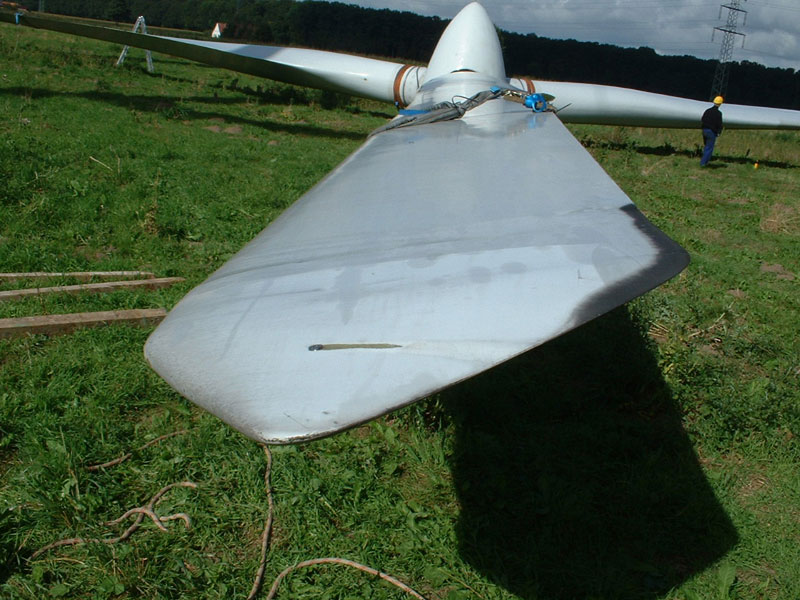

Damit sich die Räder reibungslos drehen...
{kind=link}
Nach erfolgreicher Inbetriebnahme ist eine kontinuierliche Überwachung, Analyse und Optimierung der Betriebszustände notwendig. So können Sie den optimalen Ertrag aus dem Betrieb Ihrer Windenergieanlagen erzielen. Unser primäres Ziel ist es deshalb, technische Stillstandszeiten der Windenergieanlagen zu minimieren und möglichst zu vermeiden.
Dokumentation
- Monatsberichte
- Quartalsberichte
- Jahresberichte
{kind=link}
Überprüfungen
- Koordinierung der Wartungsarbeiten
- Überwachung der Wartungsintervalle
- Beauftragung von Reparaturarbeiten
- Einhaltung der Auflagen der Baugenehmigung
- Organisation der zyklischen Anlagengutachten
Auswertungen
- Ertragsdatenzusammenstellung und Analyse
- Optimierung der Betriebsparameter und Leistungskennlinie der WEA
- Betriebsfehleranalyse
{kind=link}
Betriebsüberwachung
- Steuerung der Windenergieanlagen mit Fernüberwachungssystemen
- Auswertung und Archivierung der Datenbanksysteme
- Turnusmäßige Anlagenbegehungen
- Problemlösungen und Retrofits
Dienstleistungen
- Betreuung von Versicherungsangelegenheiten
- Vorbereitung und Abschluss von Wartungs- und Instandhaltungsverträgen
- Überwachung von Transformatoren
- Durchführung von Nachweisverfahren für Ertragstestate gem. EEG
- Vorbereitung und Abschluss von Verträgen zur Direktvermarktung
Anlagenübersicht
| Standort | Bundesland | Inbetriebnahme (Jahr) | Anzahl WEA | Anlagentyp |
|---|---|---|---|---|
| Lübbecke | NRW | 2000 | 1 | Nordex S.46 |
| Espelkamp | NRW | 2000 | 2 | Nordex S.46 |
| Lübbecke | NRW | 2001 | 1 | Nordex S.70 |
| Espelkamp | NRW | 2002 | 2 | Nordex S.70 |
| Espelkamp | NRW | 2002 | 1 | Nordex S.70 |
| Espelkamp | NRW | 2003 | 1 | Enercon E.44 |
| Bünde | NRW | 2005 | 1 | Enercon E.48 |
| Marklohe | NDS | 2006 | 2 | Enercon E.44 und E.48 |
| Marklohe | NDS | 2006 | 3 | Enercon E.48 |